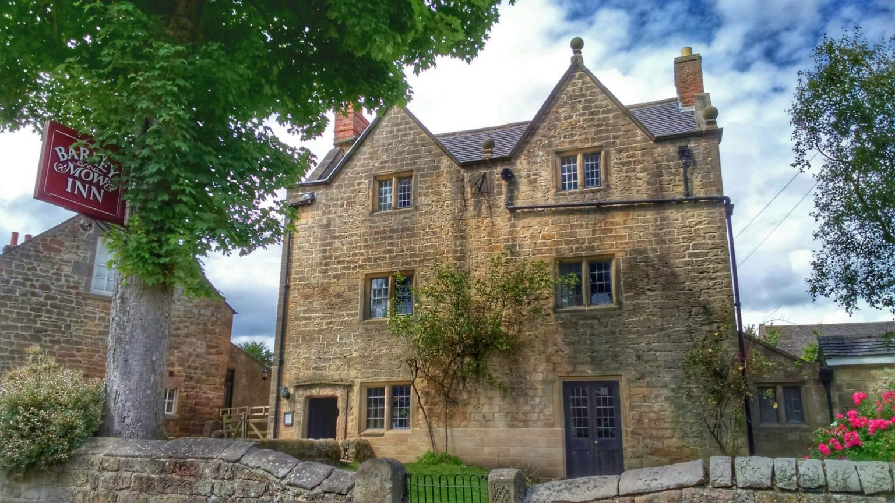

"The Derbyshire pub where they're keeping history alive"

The Barley Mow Inn is a 18th century pub based in Kirk Ireton, Ashbourne, Derbyshire. The Barley Mow Inn is renowned for providing an unspoilt, traditional pub experience often described as ‘stepping back in time’. The Barley Mow offers a range of real ales straight from the cask, local ciders and perries, and its own Barley Mow Brewery ales. These are all accompanied by delicious home-made food at weekends, using locally sourced ingredients and made in the pub.
Fancy a bite to eat?
The Barley Mow has a diverse menu available to visitors every weekend, offering an array of home cooked meals (with plenty of vegetarian options!) View our menu HERE.
We have a revised menu and opening times due to the COVID19 outbreak.